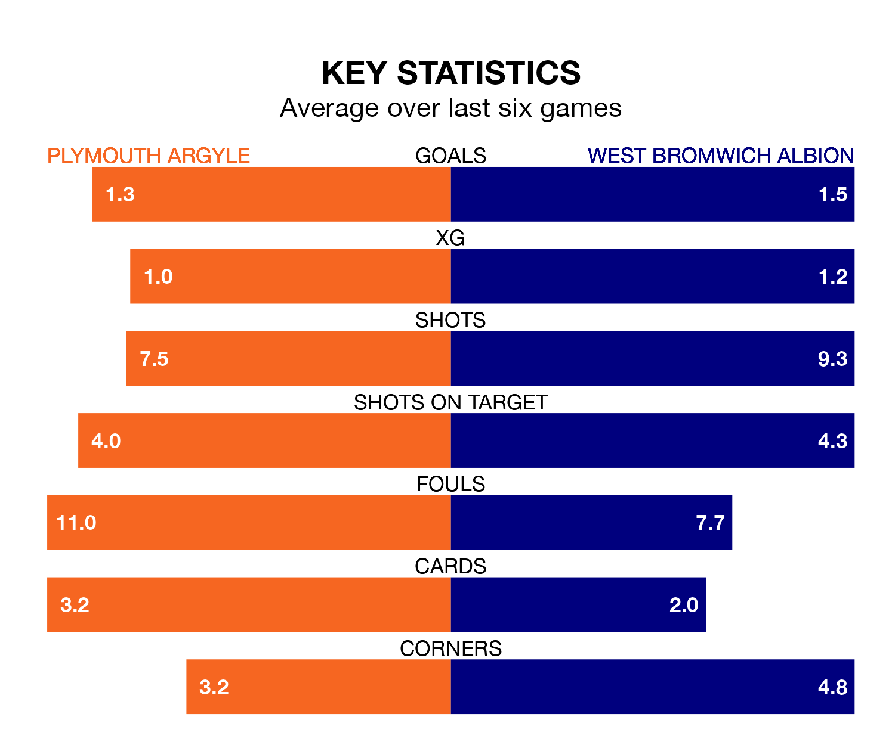

West Bromwich Albion are strong favourites to take all three points despite Plymouth Argyle's home advantage in Tuesday's late match at Home Park.
*Betting Company* are offering odds of 1.95 on West Bromwich sealing the win, with the visitors sitting fifth in EFL Championship table.
Plymouth, who are 16th in the league and 15 points behind the Baggies, are priced at 3.6 to win. A draw is set at 3.4.
In Alex Palmer, West Bromwich can rely on one of the league's safest pair of hands. He has kept 14 clean sheets in his 32 appearances this season, and no 'keeper has prevented the opposition scoring more often in EFL Championship.
In Plymouth's net, Conor Hazard has four clean sheets in 23 games. He has conceded a goal every 59 minutes, 70% more often than the 103 minutes between goals for Palmer.
With 51 goals in 32 games so far this season, Argyle are scoring more than average in the league with 1.6 goals per game. But they are conceding more than average too, letting in 54 goals at a rate of 1.7 per game.
Albion, meanwhile, are average scorers, with 1.4 goals per game. They have conceded 1.0 goal per game.
The Pilgrims are in mixed form in EFL Championship, with two wins and two draws from their last six games.
With three wins and a draw over that period, the Baggies' form is slightly better – they have taken 10 points from 18, compared to the home team's eight.
Plymouth's last match was on Saturday, a 2-0 loss against Leeds United.
West Bromwich lost 2-0 against Southampton last time out, on Friday.
Tuesday's match will be refereed by Tom Nield, who has taken charge of seven EFL Championship games so far this season, issuing no red cards and booking 27 players. He has awarded one penalty.
The last Plymouth game Nield refereed was a 1-1 away draw with Huddersfield Town on January 13. His last West Bromwich match was their 2-1 loss away at Southampton on November 11.
Updated: 12:18 (UTC), 19/02/24